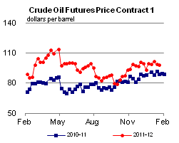

Released: January 25, 2012
Next Release: February 1, 2012
Diverging trends in regional crude acquisition costs
The rise in midcontinent North American crude production since 2010 has not benefited all U.S. refiners and consumers equally. In some cases, lower crude acquisition costs have been reflected in prices paid by consumers; in others, refiners have been able to capture higher profit margins. Perhaps not surprisingly, several refiners in the latter situation have been expanding and upgrading capacity. At the opposite end of the reshuffle, refiners have responded by idling capacity, a retrenchment that could ultimately leave local consumers with higher product prices. But this broad-based restructuring of the U.S. refining industry will not be without consequences for the very crude price trends that helped bring it on. Ironically, the remaining refiners in today's higher-cost crude markets could find themselves in an enhanced competitive position further down the road.
Figure 1 shows refiners' monthly crude acquisition costs by region since the beginning of 2010.1 Starting in October 2010, prices in the Midwest (PADD 2) decoupled from those in the Gulf Coast (PADD 3) on the back of rising production from Canada and North Dakota. While generally trending upward everywhere, crude costs have increasingly given Midwest refiners an edge over those on the Gulf Coast. Crude acquisition costs in the Midwest, where relatively cheap inland crude from the midcontinent and Canada have increasingly replaced more expensive coastal and imported grades piped in from the Gulf of Mexico, swung from a $1 per barrel premium versus those in the Gulf Coast in April 2010 to a $16 per barrel discount in October 2011, the most recent month for which EIA has refiner acquisition cost data, although recent market data suggest a narrowing of differentials between coastal and midcontinent markets. Refiners in the much smaller Rocky Mountains (PADD 4) market, who are almost entirely reliant on "stranded" midcontinent and Canadian crudes, have enjoyed the lowest crude acquisition costs in the United States. By October 2011, their costs had dropped to $6 per barrel below those in the Midwest and as much as $22 per barrel below Gulf Coast refiners. In contrast, East Coast refiners have had to cope with the highest crude refiner acquisition costs in the United States. As recently as March 2010, East Coast costs were below both average U.S. and Midwest costs by about $1 per barrel, although for most of the last few years they exceeded those costs by roughly $1 to $5 per barrel. By October 2011, however, East Coast refiners paid, on average, $10 per barrel more for crude than the average U.S. refiner and $22 per barrel more than their Midwest counterparts. Those premiums had reached even higher levels earlier in 2011.
1" border="0">
Not surprisingly, refinery utilization rates and crude oil runs have responded to crude acquisition costs. During the fourth quarter of 2011 (based on weekly data), gross inputs into U.S. refineries (which include crude oil, unfinished oils, and natural gas plant liquids put into atmospheric crude oil distillation units) ran about 1% above their seasonal average of the previous five years. But this aggregate figure hides wide regional disparities: Midwest refineries averaged gross inputs that were 8% above their five-year average, while those on the East Coast were running 22% lower than average. After a heavy September refinery maintenance schedule, gross inputs to refineries in the Rocky Mountains were 4% above average during the last three months of the year.
These diverging trends have gained momentum in the first weeks of 2012. As of January 13, Rocky Mountains refinery gross inputs were running 9% higher than average, while East Coast refinery gross inputs contracted further, to 41% below average. Weak product demand on the East Coast has helped rein in regional crude runs; the East Coast led the nation in gasoline consumption declines in 2011. On January 18, Hess announced the closure of its HOVENSA joint venture refinery in the U.S. Virgin Islands, a major source of product supply to the East Coast. That planned closure follows on the heels of the idling of two refineries in the Delaware Valley by Sunoco and ConocoPhillips and announced plans by Sunoco to idle another refinery in the region by mid-2012. The complete idling of the three refineries would collectively cut as much as 50% of current East Coast refining capacity.
To some extent, retail prices of refined products mirror those shifts in feedstock costs and refinery operations. For the last 20 years, East Coast motorists have been paying increasingly more for gasoline than those on the Gulf Coast, a trend to which the recent refinery closures and high East Coast crude costs appear to have lent considerable momentum. Since early October 2011, the East Coast gasoline price premium relative to the Gulf Coast has risen sharply, reaching near-record levels, and since late November 2011 has remained consistently above 22 cents per gallon (over $9 per barrel), a level which earlier had been reached only fleetingly. In contrast, prices in the Rocky Mountains have plummeted since early September, dropping to the lowest level of any region in the nation. Midwest prices fall somewhere between East Coast and Rocky Mountain regional prices. Historically, the spread between Midwest and East Coast prices has been very volatile, although more recently East Coast prices have moved to a widening premium versus the Midwest. Unlike Rocky Mountains motorists, those in the Midwest have not been able to parlay regional refiners' crude cost advantage into relatively lower retail product prices - most likely because the Midwest, for all its recent increases in refinery runs, remains far less self-sufficient than the Rockies in product supply. As Midwest markets continue to pull gasoline from the Gulf Coast, it is the higher cost of bringing in those Gulf Coast barrels, rather than Midwestern production costs, that tends to set Midwest product prices.
The very shifts in regional crude acquisition costs that are helping redraw the U.S. refining map remain subject to change, however. On the Gulf Coast, much of the considerable investments that refiners recently plowed into the sector have been geared less towards expanding nameplate capacity than increasing conversion depth - in other words, letting regional refineries replace light, sweet and light, sour barrels with lower-cost, heavy crudes. Those upgrades, when completed, will back out large volumes of light crude currently supplied regionally or piped north from the Gulf Coast. Following the reversal, and later expansion, of the Seaway pipeline, significant volumes of light crude may end up being shipped south from the Midwest to the Gulf Coast, even as the latter's own demand for light crudes wanes in the wake of local deep-conversion refinery expansions. This decrease in Midwest and Gulf Coast demand for light crudes will occur even as refinery closures curtail the East Coast's own crude demand and refined-product output. The outcome may be a narrowing of the so-called sweet/sour and light/heavy crude price spreads. East Coast refining margins could rise significantly due to the combined effects of lower relative feedstock costs and stronger relative product prices compared with those in markets that currently seem cost-competitive.
Gasoline and diesel fuel prices down less than a penny
The U.S. average retail price of regular gasoline fell less than a penny per gallon last week to remain at $3.39 per gallon. The average price is about $0.28 per gallon higher than last year at this time. The Midwest was the only region where prices fell, losing five and a half cents per gallon to reach $3.31 per gallon. The East Coast saw the largest regional increase at two and a half cents per gallon to put prices at $3.46 per gallon. Gulf Coast and West Coast average prices both increased just shy of two cents per gallon to reach $3.23 and $3.62 per gallon, respectively. Rocky Mountain prices increased less than a penny per gallon to $3.01 per gallon.
The national average on-highway diesel price fell less than a penny per gallon to remain at $3.85 per gallon. The diesel price is $0.42 per gallon higher than last year at this time. Prices fell in all major regions except the West Coast, where prices remained flat from last week at $4.04 per gallon. The regional price decreases were relatively small; the largest price decrease occurred in the Midwest, where prices fell one cent per gallon to $3.74 per gallon. The East Coast, Gulf Coast, and Rocky Mountain regional prices all fell less than a penny per gallon to reach $3.94, $3.77, and $3.82 per gallon, respectively.
U.S. average heating oil price decreases
The U.S. residential heating oil price decreased over $0.01 per gallon during the week ending January 23, 2012 to $3.94 per gallon. This price is $0.46 per gallon higher than the same time last year. The wholesale heating oil price decreased by $0.04 per gallon over the same period to $3.08 per gallon, $0.33 per gallon higher than last year at this time.
The average residential propane price decreased by less than $0.01 per gallon during the week ending January 23 to reach $2.86 per gallon, which is $0.06 per gallon higher than last year. The average wholesale propane price increased by $0.03 per gallon over the same period to $1.23 per gallon. This was a decrease of $0.22 per gallon when compared with the January 24, 2011 price of $1.45 per gallon.
Propane stocks decline again
Last week, U.S. inventories of propane continued to draw, falling 2.5 million barrels to end at 50.8 million barrels. The Gulf Coast region led the decline with a draw of 1.3 million barrels. The Midwest regional stocks fell 0.9 million barrels while the Rocky Mountain/West Coast stocks were down 0.2 million barrels. The East Coast inventories fell slightly. Propylene non-fuel use inventories represented 10.4 percent of total propane inventories.
Text from the previous editions of This Week In Petroleum is accessible through a link at the top right-hand corner of this page.
1 The U.S. Energy Information Administration (EIA) calculates monthly average crude acquisition costs (which include transportation and other fees paid by the refiner) based on a survey of U.S. refiners.
| Retail Data | Changes From | Retail Data | Changes From | ||||
| 01/23/12 | Week | Year | 01/23/12 | Week | Year | ||
| Gasoline | 3.389 | Heating Oil | 3.938 | ||||
| Diesel Fuel | 3.848 | Propane | 2.863 | ||||
|  | |||||||||||||||||||||||||||
|
|||||||||||||||||||||||||||
| *Note: Crude Oil Price in Dollars per Barrel. | |||||||||||||||||||||||||||
 |
|||||||
| Stocks Data | Changes From | Stocks Data | Changes From | ||||
| 01/20/12 | Week | Year | 01/20/12 | Week | Year | ||
| Crude Oil | 334.8 | Distillate | 145.5 | ||||
| Gasoline | 227.1 | Propane | 50.752 | ||||